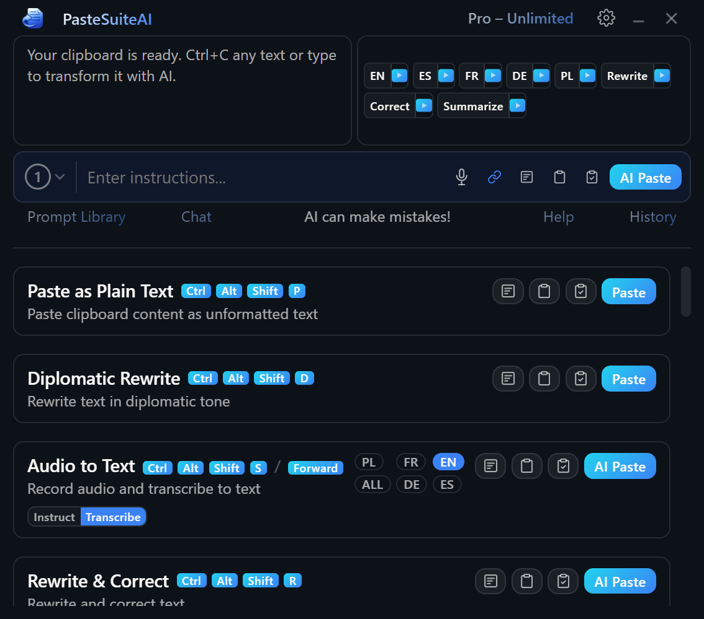

Main Window
The main window is your command center. It shows a preview of your current input, lets you add free-form instructions, and lets you execute actions — all from one compact panel.
Overview

The panel is arranged vertically, from top to bottom:
- Title bar — app name, usage badge, settings, minimize, and close.
- Input preview (left) and Quick Prompts (right) — side-by-side row showing your current input and one-click AI buttons.
- Prompt input — free-form instruction textarea with execution controls and the inline connection selector.
- Action list — scrollable list of enabled action cards.
Title Bar
The custom title bar (shown when native window decorations are turned off in Settings) contains the following elements from left to right. The title bar area is draggable for repositioning the window.
| Element | Type | Description |
|---|---|---|
| Settings button | Icon button | Opens the Settings panel on the default tab. Hidden when Settings is already open. |
| Minimize button | Icon button | Minimizes or hides the window to the system tray depending on the active Window Mode. |
| Close button | Icon button | Hides the window to the tray, minimizes to the taskbar, or quits the app depending on Window Mode and the Close on X setting. |
| UsageBadge | Clickable badge | Shows your current license phase (Trial, Licensed, or free-tier action count). Clicking it opens licensing details. |
Input Preview
The input preview area occupies the left portion of the top row. It shows the text, image, or audio that will be used as input for the next action. The content type is detected automatically:
| Content type | Display |
|---|---|
| Text | A scrollable preview of the text. Click the preview to re-copy it to the clipboard. A brief Copied badge confirms the action. A character count badge appears when the text exceeds the display threshold. |
| Image | A thumbnail of the image. Vision-capable AI actions can process images directly. |
| Audio | An audio icon with a label, and a short descriptive preview if available. |
| Empty | A hint prompting you to select or copy some content. |
| Element | Type | Description |
|---|---|---|
| Click-to-copy area | Clickable region (text only) | Clicking the left five-sixths of the text preview copies the text for reuse. Clicking near the right edge or the scrollbar does nothing. |
| Character count | Static label | Shown on text content when the character count exceeds the display threshold. Purely informational. |
Quick Prompts
Quick Prompts appear to the right of the input preview. They are one-click buttons for frequently used AI tasks. The buttons shown depend on the current input content type and which categories are enabled in Settings:
| Category | Shown when | Configured in |
|---|---|---|
| Image | Input contains an image | Settings → Quick Prompts → Image category |
| Text – Language | Input contains text | Settings → Quick Prompts → Text Language category |
| Text – General | Input contains text | Settings → Quick Prompts → Text General category |
Each Quick Prompt button has two click actions:
- Left-click — primary action (configured per prompt: fill the prompt input, execute and copy, or execute and paste).
- Right-click — secondary action.
| Element | Type | Description |
|---|---|---|
| Quick Prompt button | Button (left-click = primary, right-click = secondary) | Executes or fills the associated prompt. The exact action depends on each prompt's configured primary and secondary actions. |
For full details on configuring Quick Prompts, see PromptBar.
Prompt Input
The prompt input is a free-form textarea below the input preview row. Type instructions here to be sent alongside your text when executing an action. Press Enter to execute with the default execution mode; press Shift+Enter to insert a line break.
The prompt bar also contains several execution buttons that run a quick prompt directly from the input field without selecting an action card:
| Element | Type | Description |
|---|---|---|
| Textarea | Text input | Free-form instruction. Combined with your input text when an action is executed. Enter triggers default execution mode. |
| Microphone button | Icon button | Starts STT recording that fills the textarea with the transcribed text. Visible only when an STT connection is configured and recording is idle. |
| Clipboard mode toggle | Cycling icon button | Cycles through six input modes that control how your text is combined with the prompt. Hover for a tooltip listing all modes. |
| Overlay button | Icon button | Executes the prompt and displays the result in a floating overlay near the cursor. |
| Clipboard button | Icon button | Executes the prompt and writes the result to the clipboard only. Does not paste. |
| Paste + Clipboard button | Icon button | Executes the prompt, pastes the result, and also writes it to the clipboard. |
| AI Paste button | Button (primary) | Executes the prompt and pastes the result into the active application. This is the primary send button. |
For full details on the prompt bar including input modes, see PromptBar.
Connection Selector
The inline connection selector is embedded at the left edge of the prompt input bar. It shows a numbered badge representing the currently active connection for the capability that matches the current input type (LLM for text, Vision for images, STT for audio).
The number corresponds to the 1-based position of the connection in Settings → Connections.
| Element | Type | Description |
|---|---|---|
| Inline trigger badge | Button | Displays the active connection number. Click to open the dropdown. |
| Dropdown items | Clickable rows | Lists all connections matching the active capability. Click any row to make it the active routing choice. The selected item is highlighted. |
Action List
The action list is a scrollable list below the prompt bar. It shows all enabled, visible actions. Actions that are children of a chain are hidden — they run automatically when their parent action executes.
Action Card
Each action card shows the action name, an optional hotkey badge (keyboard shortcut), an optional panel quick key (single-letter shortcut active when the panel is focused), and a description. When a required connection is not configured, a Setup required badge appears below the description.
Execution Buttons (LLM and text-paste actions)
| Element | Type | Description |
|---|---|---|
| Overlay button | Icon button | Runs the action and shows the result in a floating overlay near the cursor. Nothing is pasted or written to the clipboard. |
| Clipboard button | Icon button | Runs the action and writes the result to the clipboard only. The active window is not affected. |
| Paste + Clipboard button | Icon button | Runs the action, pastes the result, and also writes it to the clipboard. |
| AI Paste / Paste button | Button (primary) | Runs the action and pastes the result into the active application. Labelled AI Paste for AI actions and Paste for local transforms. |
| Setup button | Button (primary, unconfigured state) | Shown instead of the normal buttons when a required connection is missing. Clicking opens Settings → Connections. |
STT Action Controls
Speech-to-text actions show recording controls instead of the standard execution buttons.
| Element | Type | Description |
|---|---|---|
| Overlay button | Icon button | Starts recording and sends the result to the overlay. |
| Clipboard button | Icon button | Starts recording and writes the transcript to the clipboard only. |
| Paste + Clipboard button | Icon button | Starts recording, pastes the transcript, and also writes it to the clipboard. |
| AI Paste button (idle) | Button (primary) | Starts a recording session. The transcript is pasted when recording stops. |
| Pause button (recording) | Icon button | Pauses the active recording. |
| Stop button (recording or paused) | Icon button | Stops the recording and begins transcription processing. |
| Resume button (paused) | Icon button | Resumes a paused recording. |
| Language chips | Buttons (left-click / right-click) | Left-click sets a language as the active input language. Right-click sets it as the output language for translate-on-transcribe. The active input chip is highlighted; the output chip has a distinct style. Only shown when the action has languages configured. |
For full details on speech-to-text actions, see Speech to Text.
Prompt Library Button
The Prompt Library link appears in the footer row below the prompt bar. Clicking it opens the Prompt Library, a searchable collection of saved prompts, quick prompts, and action prompts that you can insert into the prompt field or execute directly.
For full details, see Prompt Library.
Footer Elements
| Element | Type | Description |
|---|---|---|
| Prompt Library link | Clickable text | Opens the Prompt Library panel above the footer. Clicking again closes it. |
| AI disclaimer | Static text | Brief note that AI results may be inaccurate. Shown only when connected. |
| Help button | Clickable text (conditional) | Starts the interactive guided tour. Hidden when Show Help Button is disabled in Settings. |
| History button | Clickable text | Opens the clipboard history view in Settings. See History. |
Window Modes
The window mode controls how PasteSuiteAI behaves when minimized or closed. Configure it in Settings → General → Window Mode. The default mode is Always Tray.
| Mode | When visible | During actions | Close / X button | Best for |
|---|---|---|---|---|
| Always Tray (default) | No taskbar entry — tray icon only. | Window hides instantly. No taskbar flash, no visual interruption. | Hides to tray. The app keeps running in the background. | Cleanest experience. The app stays completely out of the way — you interact only via hotkeys and the tray icon. |
| Usually Tray | Taskbar entry visible while the window is open. | Minimizes to the taskbar during execution, taskbar flashes as progress feedback, then hides to the tray once complete. | Hides to tray. | Gives you a brief visual confirmation in the taskbar that an action is running and when it finishes, without leaving a permanent taskbar entry behind. |
| Always Taskbar | Taskbar entry visible at all times, even when minimized. | Minimizes to the taskbar, flashes on completion, stays in the taskbar. | Minimizes to the taskbar (does not quit). | Traditional desktop app behavior. Always one click away in the taskbar. |
For more on window and appearance settings, see Settings.